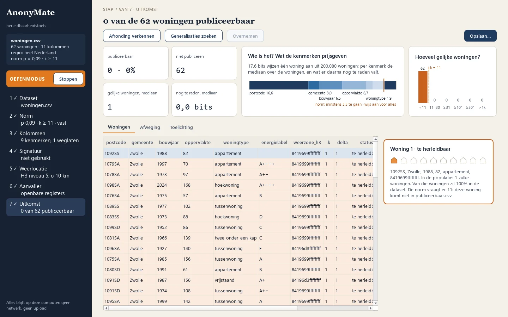
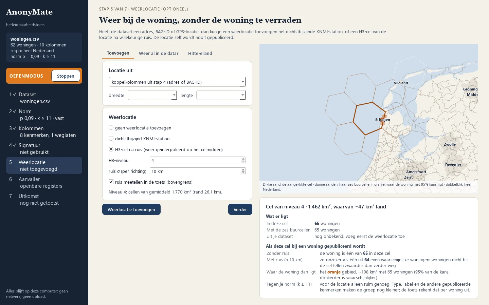

Zeven stappen, van dataset tot publiceerbaar bestand
Het programma loopt dezelfde stappen door als een aanvaller, maar dan vóórdat je publiceert.
- 1DatasetOpen je CSV of Excel; alles blijft lokaal.
- 2NormKies de drempel, bijvoorbeeld p ≤ 0,09, dus k ≥ 11.
- 3KolommenWelke kenmerken verraden iets: postcode, bouwjaar, oppervlakte, label.
- 4SignatuurWarmteverlies H en tijdconstante τ zijn ook uit openbare bronnen te schatten.
- 5WeerlocatieWeerdata bij de woning, zonder de locatie prijs te geven.
- 6AanvallerWat weet die al: alleen de registers, of meer?
- 7UitkomstPer woning: publiceerbaar of te herleidbaar, en wat helpt.


Eén woning in een groep van elf
Een dataset zonder naam en adres kan nog steeds naar een voordeur wijzen. Postcode, bouwjaar en oppervlakte samen zijn vaak al uniek. Een warmtesignatuur per woning is nauwkeurig genoeg om daar nog een paar stappen bij te zetten.
AnonyMate rekent dat uit tegen de hele Nederlandse woningvoorraad, zoals een aanvaller dat zelf ook kan. Voldoet een woning niet, dan stelt het voor welke kolom je grover maakt of welke woning je weglaat, en wat dat aan bruikbaarheid kost.
| kans p | groep k | bits nodig |
|---|---|---|
| 0,50 | ≥ 2 | 1,0 |
| 0,33 | ≥ 3 | 1,6 |
| 0,09 | ≥ 11 | 3,5 |
| 0,05 | ≥ 20 | 4,3 |
Wat je moet weten over deze proefversie
- In de browser
- De eerste keer laadt de pagina Python en de rekenbibliotheken (ongeveer 20 MB, zo'n 20 seconden); daarna werkt alles in het browservenster, zonder dat er iets wordt verstuurd. Gemaakt voor een laptop- of desktopscherm. Getest in Chrome en Edge.
- Windows-programma
- Pak de zip uit en start
anonymate-gui.exe. Beheerrechten zijn niet nodig. Het programma is nog niet ondertekend, dus Windows waarschuwt: kies Meer info en dan Toch uitvoeren. - Oefenmodus
- Werkt meteen, met een verzonnen Nederland en voorbeeldwoningen. Zo leer je de stappen kennen zonder iets te downloaden.
- Je eigen dataset
- Daarvoor is eenmalig de hele woningvoorraad nodig, uit BAG, 3D-BAG, EP-online en KNMI. De browserversie toetst een eigen dataset voorlopig nog tegen het verzonnen Nederland van de oefenmodus. In het Windows-programma bouw je de woningvoorraad nu nog zelf op met de opdrachtregel (enkele uren, ruim 8 GB aan downloads), zoals de README beschrijft. Voor EP-online vraag je een gratis sleutel aan. Kant-en-klare datapakketten volgen.
- Iets gevonden?
- Meld het als issue op GitHub.
Openbaar, en na te gaan
De broncode staat op GitHub onder de EUPL 1.2. Het Windows-programma en de browserversie worden daar ook gebouwd, zodat iedereen kan nagaan wat erin zit. Codeondertekening van het Windows-programma volgt (beleid).
Waarom
Metingen in woningen zijn waardevol voor onderzoek naar de warmtetransitie, maar worden vaak niet gedeeld uit zorg om privacy. AnonyMate maakt die afweging meetbaar, zodat meer data verantwoord openbaar kan.
Van wie
AnonyMate is een project van Henri ter Hofte, geïnspireerd door het NeedForHeat AnonyMate-onderzoek van het lectoraat Energietransitie van Hogeschool Windesheim, eerder gepresenteerd bij KITE (inloggen bij KITE nodig).